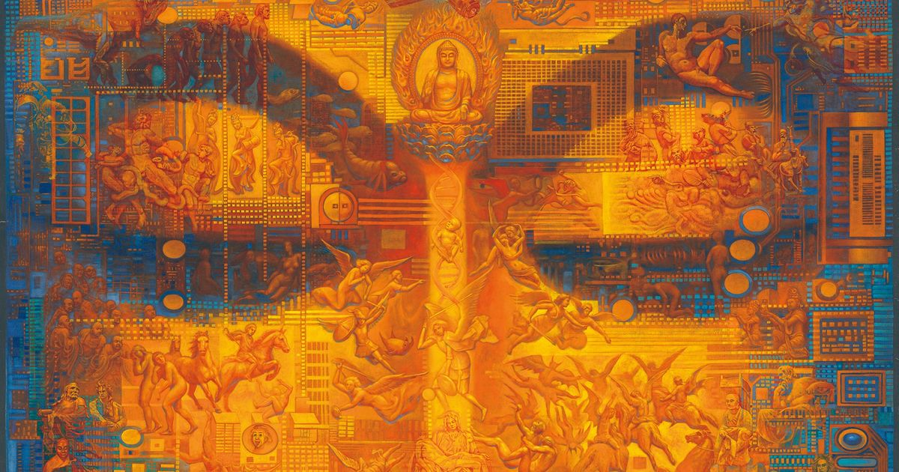
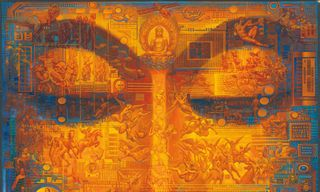

Complete Book Intelligence Brief
張鎮洲《大廟埕》完整資料整理
整合書籍規格、作者背景、新書發表、推薦序、關鍵評論網選摘、核心主題與文化脈絡，做成可展示的圖文 HTML PPT。
北港媽祖四宮香路文明級敘事香火權力作者分析

《大廟埕》公開書影 / 暖暖書屋出版整合書籍規格、作者背景、新書發表、推薦序、關鍵評論網選摘、核心主題與文化脈絡，做成可展示的圖文 HTML PPT。

《大廟埕》公開書影 / 暖暖書屋出版《大廟埕》不是只寫媽祖，也不是只寫北港；它把廟埕當成台灣社會的縮影，檢視信仰、利益、家族、制度與文明衝突如何在民間現場交會。
公開書籍頁與新書發表資料都把它定位成「以北港為舞台、從媽祖信仰出發、融合宗教、人性、社會結構與文明思考」的長篇小說。
《大廟埕》
張鎮洲；公開書籍頁與文章署名均作「張鎮洲」。
暖暖書屋文化事業股份有限公司。
Readmoo：2026/03/13；BOOK☆WALKER：2026/04/11。
Readmoo：EPUB 流動版面、字數 119,529；BOOK☆WALKER：278 頁。
ISBN 9786267457689；eISBN 9786267457696。
來源：Readmoo、BOOK☆WALKER、三民網路書店書籍頁。
公開介紹稱它「不只是關於北港媽祖的故事」，而是以北港為舞台、四宮鬥香路為結構，串起時代、人物、婚姻、律法、憐憫、肉身與救贖。
更強的說法是：小說被推進為一種「文明級敘事結構」——不只描述世界，也試圖作為社會除錯、文明價值排序與倫理模擬的敘事系統。

書籍縮圖生於雲林縣北港鎮，自幼浸潤地方信仰文化。
畢業於國立政治大學心理學系，作品中可見人性與群眾心理觀察。
曾任國樂團胡琴、交響樂團小提琴，推動校園課後弦樂團與科學式小提琴教學。
投入文創、公共論述與 IP 敘事，出版《給老百姓的總統必修課》後持續做文明敘事整合。
來源：Readmoo / 三民作者簡介、品傳媒新書發表報導。
品傳媒報導新書發表於台大校友會館舉辦，主題指向台灣文化與深層信仰。
報導列出北港朝天宮董事長蔡咏鍀、許榮淑、賀立維、張振宇、王調軍、黃鴻端、何啟聖等人。
小說從媽祖信仰出發，直指台灣文化核心，回望北港小鎮在時代變遷中的轉型與式微。
報導提到與 Korea Grendel 影視合作構想，以及與 AI 專家合作呈現視覺張力。
「人只能愛人，而神必須愛魔鬼。」
張鎮洲在新書發表中說明，這句話是作品核心：人有好惡與立場，但神性要超越分別；即便是魔鬼，也不排除、不拒絕。這讓《大廟埕》不是單純站隊，而是在處理更難的「包容」問題。
廟埕不是口號與符號，而是討生活、講道理、找出路的地方；作品把信仰放回生活裡。
把《大廟埕》讀成文明鏡子：真正的征服不是靠武力或制度，而是靠愛與原諒。
從全球化與數位化視角，肯定作品保存地方記憶，也提醒技術進步不能忽略傳統價值。
來源：Readmoo、三民網路書店商品簡介與推薦序摘述。
神明爭鋒返宮大陸、神秘分靈、四大廟間的宮鬥與和解、神明與人的終極和解。
北港鄉土失樂園、傳統餅店的新復興、吳記餅店與彩雲香的明爭暗鬥。
青澀童年的約定、婚姻糾葛、愛情宣言、秘密、獻祭與救贖。
醫學與宗教、律法與憐憫、信徒與基督徒的廟前鬥法，讓地方故事拉到文明衝突層次。
大甲媽祖進香與北港分靈情感，形成「娘家—女婿」式的歷史關係。
透過學術、媒體、祖廟敘事與政治語言，重塑誰才是正統。
路線改變不只是交通路線，而是地方權力、香火認同與集體記憶的改寫。
象徵傳統、娘家、歷史記憶與地方情感。
象徵動員力、商業化、現代宮廟行銷與新興地方能量。
在選摘中是敘事改造與正統論述競爭的重要角色。
新書發表報導提及其與北港、大甲之間進香歷史；可作為台灣媽祖路線多樣性的參照點。
信仰中心的位移，也代表地方權威的位移。
正統不是靜態事實，而會被論文、媒體、儀式與口號建構。
被形容為「受傷的獅子」：敏感、驕傲、脆弱，也承載歷史重量。
信徒、香油錢、活動規模與地方經濟，成為神聖現場的現實面。
湄洲祖廟與「返宮」語言，使民間信仰進入政治與統戰敘事場。
核心金句把小說推向「神如何面對魔鬼」的倫理高度。
影視合作、AI 視覺、封面藝術，顯示作品不只想作為書存在。
作品自我定位為可被使用的敘事系統，而非只供欣賞的文學文本。
品傳媒報導指出，封面繪圖來自前北美館館長張振宇，意圖傳達世間萬象本是一體共存，呼應本書對不同信仰、階層、文化與人性陰影的接納。
因此這份 PPT 採用橘金、廟埕紅、古紙色與暗色神聖感，讓「宗教現場」與「現代分析」並置。
可從民間信仰、地方社會與宮廟政治切入。
可觀察地方 IP、信仰資產與文化敘事如何被包裝、傳播、放大。
可研究地方題材如何升級成多線敘事與文明命題。
可看到民間信仰如何被政治、經濟與身份認同牽動。
Readmoo、BOOK☆WALKER、三民：用來確認書名、作者、出版社、ISBN、字數/頁數、作者簡介、推薦語與目次。
品傳媒：用來確認新書發表脈絡、出席人物、十年構思、作者回應核心金句、影視/AI 延伸計畫。
The News Lens：用來分析「大甲媽祖進香改道」「香火權力遊戲」「北港哀愁」與小說片段的社會意義。
公開資料中穩定署名為「張鎮洲」；「教授」稱謂未在主要來源穩定確認，因此本簡報採「作者張鎮洲」。
如果要把《大廟埕》放進一句顧問式結論：它是一個把北港媽祖信仰轉化為文化 IP、社會診斷與文明敘事的作品。
它最有價值的地方，是用地方故事承載巨大問題：誰能定義正統？傳統如何被市場改寫？神性如何容納人性的陰暗？台灣民間信仰如何成為理解台灣社會的入口？
每份簡報底部都有五個固定按鍵。按鍵會顯示「符號 + 中文小字」，手機與桌面都可以直接點選。
回到前一張投影片。
前往下一張投影片。
打開全部投影片目錄。
顯示本頁重點摘要。
切換沉浸/專注模式。